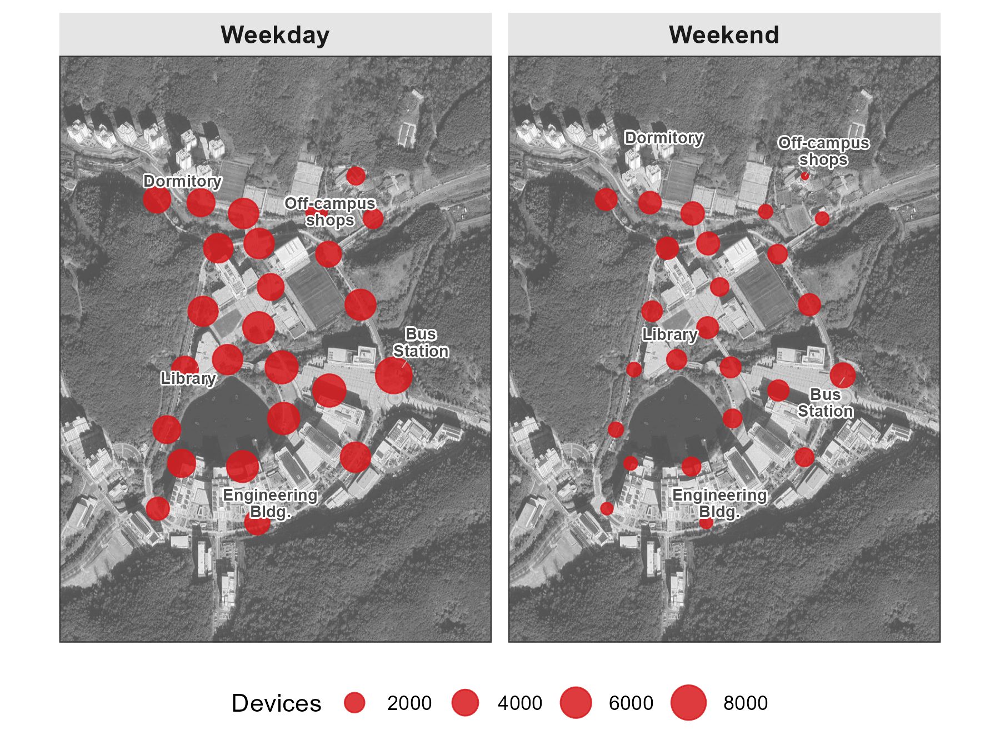

pacman::p_load(tidyverse, lubridate, arrow, sf, ggspatial)8 Count
While Location identifies where devices are, Count answers how many. This chapter shows how to aggregate WiFi detections into device counts—by sensor, by hour, by day type—to estimate pedestrian activity across your study area.
The core metric is unique devices per time window: for each sensor and time period, count distinct MAC addresses. Temporal aggregation reveals daily rhythms; spatial aggregation reveals hotspots. Together, they characterize when and where people concentrate.
8.1 Setup
Prepare data
Download our sample dataset to follow along, or use your own WiFi detection data: sample_main.zip. The ZIP contains WiFi detections from a 26-day campus deployment.
NoteAbout the sample dataset
Period: October 21 – November 15, 2019 (26 days) — spanning midterms, a campus interview event, and a school festival.
Location: UNIST campus, Ulsan, South Korea. 25 outdoor sensors covered dormitories, academic buildings, cafeteria, library, gym, and bus station.
Data structure:
| File | Rows | Columns |
|---|---|---|
wifi.parquet |
~2.8M | timestamp1, source_address, sensor_name |
sensors.gpkg |
25 | sensor_name, geom |
poi.gpkg |
5 | name, geom |
How we prepared this sample (see scripts/4-0-prep.R):
- Selected timestamps and sensor data from the full WiFi dataset
- Hashed MAC addresses (SHA-256, first 8 characters) for privacy
- Exported as Parquet for efficient storage
The figures in this chapter use the full 26-day dataset.
Load packages and data
Load required packages using pacman::p_load(), which installs any missing packages automatically:
Load the data files:
wifi_raw <- read_parquet("../data/sample_main/wifi.parquet")
sensors <- st_read("../data/sample_main/sensors.gpkg", quiet = TRUE)
TipPreview loaded data
WiFi data — raw probe request detections:
head(wifi_raw, 3) timestamp1 source_address sensor_name
1 2019-10-21 00:00:12 a3f7b21e bus_station
2 2019-10-21 00:05:33 a3f7b21e bus_station
3 2019-10-21 00:12:47 c8e42d9a 108_front_outsidetimestamp1: Detection timestampsource_address: SHA-256 hashed device identifier (first 8 characters)sensor_name: Which sensor detected this device
Sensors — point geometries with location coordinates:
head(sensors, 3)Simple feature collection with 3 features and 1 field
Geometry type: POINT
Geodetic CRS: WGS 84
sensor_name geom
1 bus_station POINT (129.1918 35.57348)
2 108_front_outside POINT (129.1887 35.57197)
3 206_front POINT (129.1875 35.57202)8.2 Workflow
Hourly counts
Aggregate detections into hourly counts by counting unique devices across all sensors:
hourly_counts <- wifi_raw |>
mutate(
hour = floor_date(timestamp1, "hour"),
day_type = if_else(wday(timestamp1) %in% c(1, 7), "Weekend", "Weekday")
) |>
group_by(hour, day_type) |>
summarise(n_devices = n_distinct(source_address), .groups = "drop")
head(hourly_counts)# A tibble: 6 x 3
hour day_type n_devices
<dttm> <chr> <int>
1 2019-10-23 00:00:00 Weekday 847
2 2019-10-23 01:00:00 Weekday 612
3 2019-10-23 02:00:00 Weekday 498
4 2019-10-23 03:00:00 Weekday 421
5 2019-10-23 04:00:00 Weekday 389
6 2019-10-23 05:00:00 Weekday 456The day_type column distinguishes weekday from weekend patterns—university campuses show pronounced differences between the two.
Average daily pattern
Collapse across days to compute the typical hourly rhythm:
hourly_pattern <- hourly_counts |>
mutate(hour_of_day = hour(hour)) |>
group_by(hour_of_day, day_type) |>
summarise(
mean_devices = mean(n_devices),
sd_devices = sd(n_devices),
.groups = "drop"
)8.3 Temporal patterns
Plot the average hourly pattern with standard deviation bands:
ggplot(hourly_pattern, aes(x = hour_of_day, y = mean_devices,
color = day_type, fill = day_type)) +
geom_ribbon(aes(ymin = pmax(0, mean_devices - sd_devices),
ymax = mean_devices + sd_devices),
alpha = 0.2, color = NA) +
geom_line(linewidth = 1) +
geom_point(size = 2) +
scale_x_continuous(breaks = seq(0, 23, by = 3)) +
scale_color_manual(values = c("Weekday" = "#2c7bb6", "Weekend" = "#d7191c")) +
scale_fill_manual(values = c("Weekday" = "#2c7bb6", "Weekend" = "#d7191c")) +
labs(x = "Hour of Day", y = "Unique Devices Detected", color = NULL, fill = NULL) +
theme_minimal()
NoteInterpreting the temporal pattern
The weekday curve shows a clear work schedule: activity ramps up sharply after 7am, plateaus from 10am to 6pm at ~2,700 unique devices per hour, then tapers into the evening. Weekends are flatter, with activity spread more evenly across daylight hours and plateauing at ~1,000 devices—roughly 2.5× fewer than weekdays.
Key observations:
- Peak timing: Weekdays peak at noon (lunch hour); weekends peak later around 2-3pm
- Morning ramp: Weekdays show steep 7-9am increase (commute arrival); weekends rise gradually
- Evening decay: Both patterns decline after 6pm, but weekends maintain higher late-night activity (social activities)
TipCalendar view for multi-week deployments
For deployments spanning multiple weeks, a calendar-style small multiples plot reveals day-to-day variability. Special events, holidays, or weather disruptions appear as anomalies against the regular weekly rhythm.
daily_hourly <- wifi_raw |>
mutate(
date = as.Date(timestamp1),
hour_of_day = hour(timestamp1)
) |>
group_by(date, hour_of_day) |>
summarise(n_devices = n_distinct(source_address), .groups = "drop")
ggplot(daily_hourly, aes(x = hour_of_day, y = n_devices)) +
geom_line(linewidth = 0.5) +
facet_wrap(~ date, ncol = 7, scales = "free_y") +
labs(x = "Hour", y = "Devices") +
theme_minimal()
The calendar view reveals which days deviate from the typical pattern. Midterm exam weeks, campus events, or holidays become visible as unusual curves among the regular rhythm.
8.4 Spatial patterns
Counts vary by location. Some sensors cover high-traffic corridors; others monitor quieter areas. Mapping counts by sensor reveals spatial hotspots.
Sensor-level aggregation
Count unique devices per sensor, filtering to midday hours (11am–2pm) when activity is most consistent:
sensor_counts <- wifi_raw |>
mutate(
day_type = if_else(wday(timestamp1) %in% c(1, 7), "Weekend", "Weekday"),
hour_of_day = hour(timestamp1)
) |>
filter(hour_of_day >= 11 & hour_of_day <= 14) |>
group_by(sensor_name, day_type) |>
summarise(n_devices = n_distinct(source_address), .groups = "drop")Map visualization
Join counts with sensor coordinates and plot. Circle size encodes device count:
sensors_with_counts <- sensors |>
left_join(sensor_counts, by = "sensor_name")
ggplot() +
annotation_map_tile(type = "osm", zoom = 15) +
geom_sf(data = sensors_with_counts, aes(size = n_devices),
alpha = 0.8, color = "#d7191c") +
scale_size_continuous(range = c(2, 8), name = "Devices") +
facet_wrap(~ day_type) +
theme_void()
NoteInterpreting the spatial pattern
The spatial contrast reveals functional zones:
- Dormitory sensors: Similar counts on weekdays and weekends—residents are present regardless of schedule
- Engineering building sensors: Pronounced weekday peaks—students commute for classes then disperse
- Cafeteria sensors: High traffic on both day types, but weekday lunch crowds are larger
- Off-campus shop sensors: Weekday peaks reflect student errands between classes
The map effectively visualizes how different campus zones serve different functions: residential areas maintain steady occupancy while academic areas pulse with the class schedule.
8.5 Adjusting for MAC randomization
Raw counts overestimate actual people because randomized MACs generate multiple addresses per device. We can approximate a correction using the ratio of non-random to total MAC addresses.
Identify random MACs
The second character of a MAC address indicates whether it’s locally administered (random) or globally unique (manufacturer-assigned):
is_random_mac <- function(mac) {
second_char <- substr(mac, 2, 2)
second_char %in% c("2", "3", "6", "7", "a", "b", "e", "f",
"A", "B", "E", "F")
}
wifi_raw <- wifi_raw |>
mutate(is_random = is_random_mac(source_address))Calculate adjustment ratio
non_random_ratio <- wifi_raw |>
summarise(ratio = mean(!is_random)) |>
pull(ratio)
# Adjusted count = raw count * non_random_ratio
WarningProxy, not precise correction
This adjustment assumes non-random devices represent the “true” population structure and that random MAC inflation is uniform across time and space. In controlled environments (campus WiFi, event registration), non-random ratios are higher and this adjustment is more reliable. For public deployments with high randomization rates, treat adjusted counts as rough estimates.